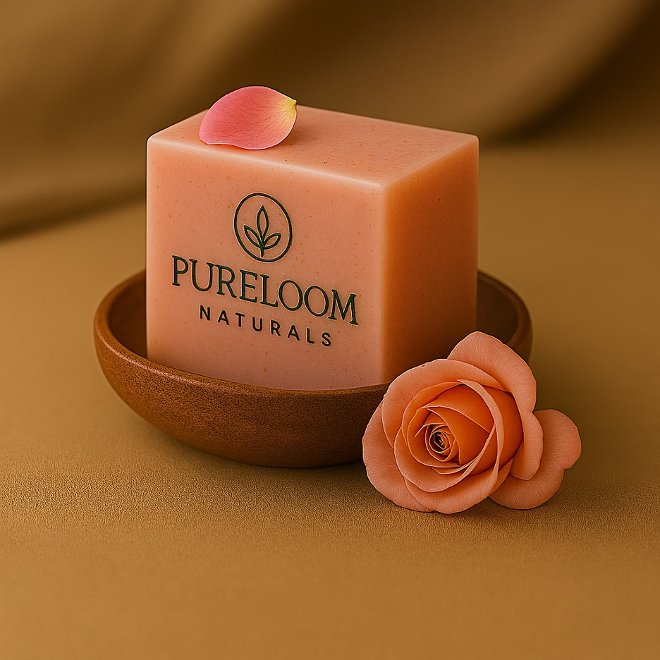

← Back to Products

HandmadeHandmade Soap
Shea Butter Rose
$13.99
Our shea butter rose soap is a luxurious and nourishing bar crafted to hydrate and rejuvenate the skin. Rich in vitamins and fatty acids, shea butter helps improve skin elasticity, while rose essential oil soothes and enhances the skin's natural glow. This soap gently cleanses and leaves the skin soft, supple, and delicately scented.
Ingredients
Virgin olive oil, pure coconut oil, castor oil, palmolein oil, sweet almond oil, rice bran oil, shea butter, rose essential oil, water, salt, sugar, and sodium hydroxide.
Highlights
- 100% natural and handmade
- Deeply moisturizing and skin-softening
- Helps improve skin texture and radiance
- Free from chemicals, artificial colorants, artificial fragrances, parabens, sulfates, phthalates, and petroleum